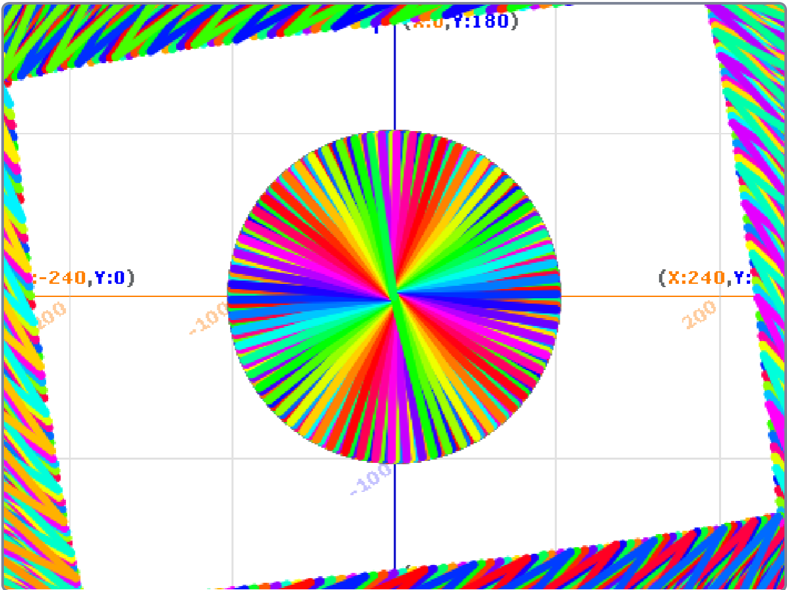
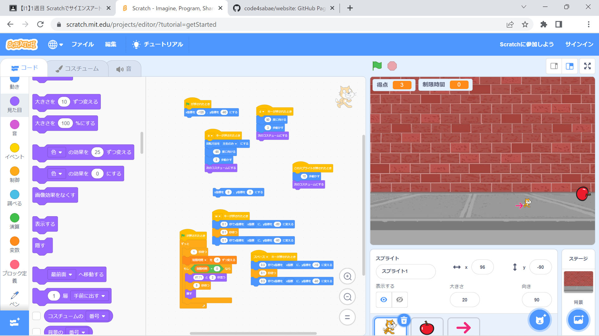
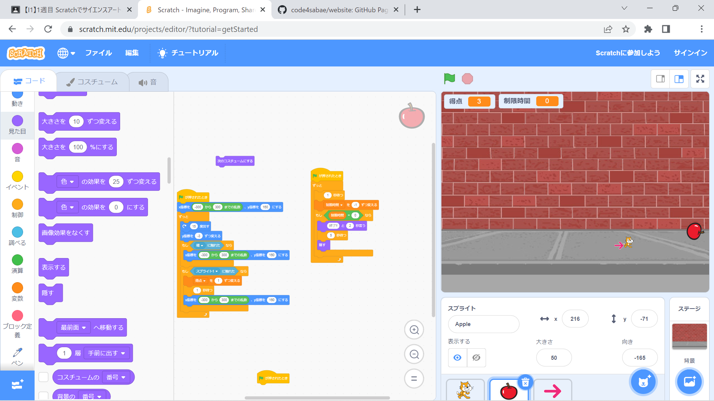
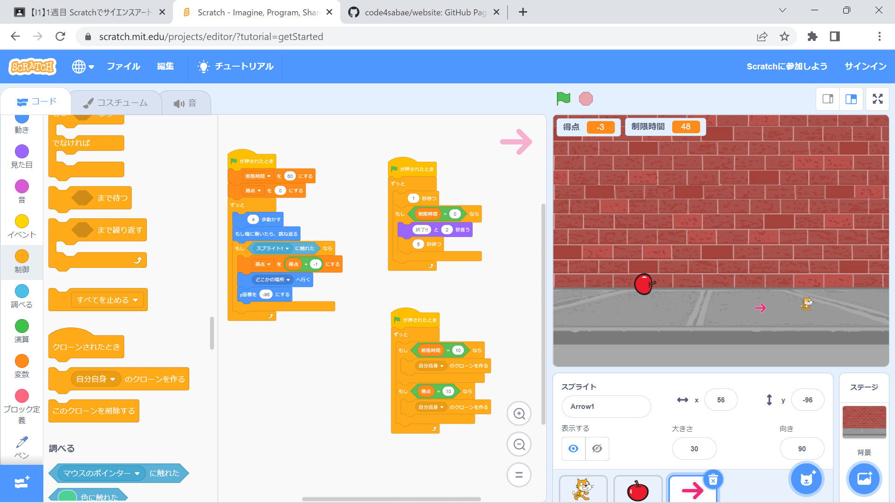

1週目のレポート ： 公大高専１年実習I-1
2B班34番 motoji
第1週目
1-1 サイエンスアート

1.内容 スクラッチでブロックプログラミングをし、サイエンスアートを描いた。
スクラッチを使って線を書くプログラムを自分で作った。
2.感想
真ん中の円だけでなく、外側に枠のようなものが描けて全体的な色や形のバランスを綺麗にすることができた。 これからは、モネの睡蓮のような
絵の具でキャンパスに描かれた絵画よりもサイエンスアートのほうが価値が高くなる時代が来そうだと思った。
1-2 ゲーム
  
1.内容
スクラッチのブロックプログラミングを使ってゲームを制作した。
2.感想
猫に小ジャンプと大ジャンプのコマンドを増やし、障害物として矢印を追加した。
制限時間を設けることによって、オフラインでランキングをつけられるようにできた。
ゲームとしては、猫がリンゴをキャッチすると+1pt、矢印に当たると-1ptで、ジャンプは、
矢印をよけるか、リンゴを早くキャッチするかに使い分けられる。
小ジャンプと大ジャンプを使い分けないと、着地のタイミングで矢印に当たってしまうこともあるので、
ジャンプの使い分けが重要です。
1-3 ホームページ作成
motojiのHP
1.内容
GitHubを使って、レポート提出用のホームページを作った。
2.感想
難しいのかなと思っていたけれど、とても簡単で楽しくすることができた。
まだ初歩的なことしかやっていないけれど、将来使えるような知識を得ることができた。